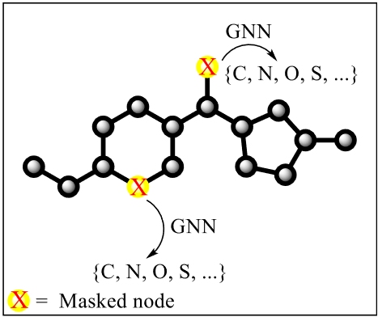
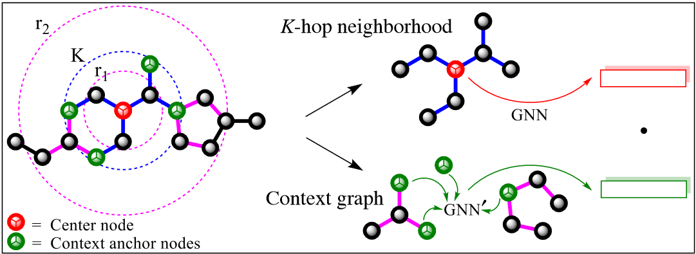
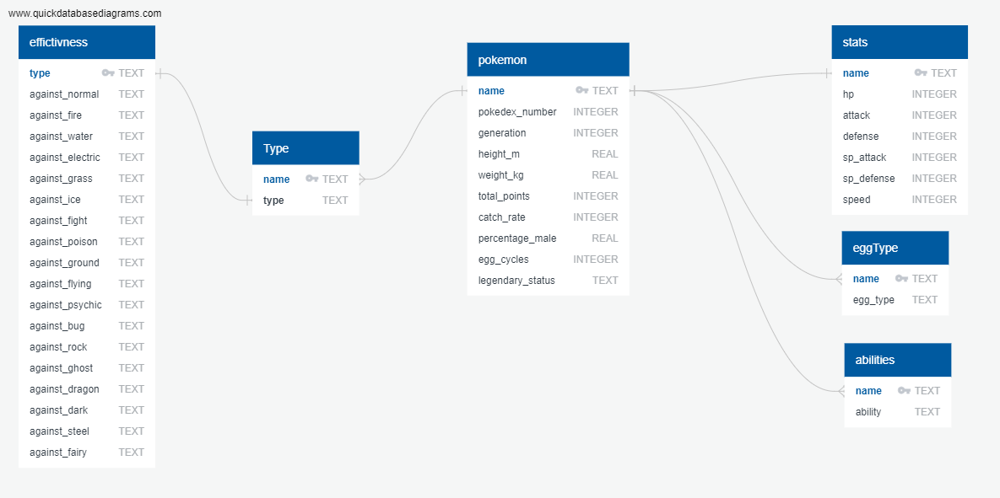

I had the opportunity to work as a software development intern at John Deere in the summer of 2022. I worked on two
projects, one in machine learning and the other in cyber-security.
My primary project was developing a program to help categorize support tickets to ensure they were going to the correct
support group. This was particularly pressing as support was becoming a monster consuming roughly 30% sprint velocity for
my team. To help achieve this, I employed natural language processing and neural networks. I used a simple feedforward
neural network with a categorical cross entropy loss function training on tokenized versions of the tickets. A simple GUI
using TKinter allowed the user to request classification of new tickets.
Another task related to the support tickets was finding similar tickets to the ones the user was inputting to help quantify
the support impact of different applications rather than relying on tribal knowledge to diagnose weak points. This would
also allow the user to see the most similar tickets to the one they provided which enables them to determine if there is
already a solution to a similar issue which can be used to guide the process. To do this I represented tickets using term
frequency inverse document frequency transformations before calculating cosine similarities.
The second project that I took on was resolving some of the cyber-security vulnerabilities facing the team. Across the
teams 6 web applications I was able to resolve around 500 cyber-security vulnerabilities of varying severity. The
resolution I found most interesting was using prepared statements in place of SQL queries to circumvent SQL injection
attempts by compiling the query before parameters are added and the query is executed.


I joined the Gomes lab in October of 2019 as an undergraduate research assistant. Our work largely focused on
molecular property prediction using neural networks on graph representations of molecules. Initially we worked on
predicting carbon monoxide binding energies on different catalytic surfaces as a step in carbon dioxide breakdown.
Our models were created in PyTorch and trained on data like the Open Quantum Materials Database.
We used supervised and self-supervised pretraining methods to improve the perofrmance of our neural network including
things like context prediction and graph node masking. With Context prediction we would select a node in the graph
and take a neighborhood of the node as the starting point. We then predicted the context which is the other nodes
between the edge of the neighborhood and the predifined edge of context prediction. Graph node masking involves
retaining all information except the molecules we are predicting.
Pretraining even on unrelated tasks can provide a large increase in performance since the model will still get
information about relationships which may be present in the data. We also used Bayesian optimization to improve
performance by finding optimal configurations of hyperparameters for the model. With each model being constructed
differently the number of hyperparameters can become quite large, making manually tuning them a very labor intensive
process.
I joined the Wang lab in the Summer of 2021 as an undergraduate reseearcher. To the right is a poster I presented
on the work I did on the replacement of a lookup table for atmospheric properties with a neural network to improve
the speed of retreival and increase accuracy for out-of-distribution datapoints.
For my capstone design project in Spring 2023 I built a wearable computer vision device in a team of four. The basic
premise was to serve as a navigational aid for the blind and visually impaired to help them in areas which rely on
visual mediums to convey information. Most people are able to look at an intersection and figure out the locations of
crosswalks and vehicles, but in the absence of visual stimulus that information can be difficult to obtain.
Our program ran on the Nvidia Jetson Nano, a small single board computer with a GPU. We used the Yolov5 computer
vision model for our object detection, and the CoCo dataset for most of our classes. Some classes required us to
manually label them, like crosswalks, since they weren’t present in CoCo. I used the “small” model architecture which
has around 7 million parameters in it since it was the largest size I was able to fit into the RAM of the Nano while
still maintaining all other operations. The model was able to run each frame in around 120-150ms giving us somewhere
around 7fps usually.
The user had a glasses frame with a camera and buttons on it which connected to the Nano. The buttons would cycle
through the classes available for detection and allow them to select which they wanted notifications for. We used a
frame queue to track the presence of objects to avoid any erroneous announcement of misclassified objects. Once an
object was detected and consistent, if the user had selected to be notified for it, an audio message would play from
a Bluetooth earpiece mounted on the glasses to alert them of the type of object, number of them, and location (left,
right, or center).
In my Internet of Things course, I created a cutting-edge IoT aquarium equipped with automation and alerts to assist
users in caring for their fish. Powering this advanced system was a Raspberry Pi, which incorporated a range of
sensors to monitor crucial factors such as flow rate, water level, and temperature within the tank. To provide a
seamless user experience, I developed a user interface using React JS, which was hosted on AWS. To ensure maximum
security, we implemented an AWS authenticator, preventing unauthorized access to the fish controls.
The website featured real-time graphs that displayed time-based data for each sensor, dynamically updating every 5
seconds. These graphs retrieved information from InfluxDB, our chosen database for storing time series data. For
persistent flags and non-timed data, we utilized Firebase, enabling both the web app and the Raspberry Pi to access
the necessary information upon initialization. Through the website, users could easily configure desired values for
each sensor. In the event that any of the readings fell below the specified threshold, the user would receive an
instant text notification, ensuring timely intervention. Furthermore, the Raspberry Pi had the capability to activate
or deactivate a USB heater, if the user opted for automatic control. This feature maintained the tank's temperature at
the user's preferred setting, providing optimal conditions for the fish.
In fall of 2021 I did an individual course project in my graduate AI/ML class where I used chest radiographs to
predict various
lung observations. We used the CheXpert dataset, and had the option of either starting from raw images or using
extracted features provided by our professor from his work with the deepAUC team. I chose to use raw images because
I was interested in getting experience with convolutional neural networks, even if it required extra legwork.
I used a DenseNet-121 architecture with hyperparameters selected by Bayesian optimization. Raw images were also
augmented by rotating positive or negative degrees, translating left and right, or scaling up and down.
There were a large number of uncertain labels in the data, so another major aspect of my project was handling
uncertain data in different ways.
This course project was highly successful. Being the only student starting from raw images as far as I know,
an undergraduate student, and working on the project individually I was able to achieve the 3rd best AUC score on
the test dataset. My model had an AUC of 0.88, only behind models achieving 0.89. Additionally, on a personal level
it was a great way to gain experience with convolutional neural networks.
Spring of 2022 I took a course on embedded systems. For our course project my partner and I developed a rotating
platform for firing a nerf dart remotely. All code was written in C and run on two Arduinos. The first Arduino
received input from the joystick using analog to digital conversion and then generated commands to transmit from
the master HC-06 Bluetooth transiever using USART communication.
The second Arduino received the commands, parsed them, and then controlled all of the functionality for the platform.
We used a stepper motor for the rotation of the platform, allowing for adjustable speed and full rotation.
When the joystick was pressed the the Arduino started a PWM signal to the servo motor, causing it to start rotating.
The motor was connected to the blaster trigger by fishing line which would pull back far enough to fire
when fully extended. The platform was built from scrap wood I had from other woodworking projects, and the stepper
motor had a 3d printed mount connecting it to the platform. All non-wood components were held to the platform with
zip ties.

In my course on database systems we were given very few restrictions on what we could work on. We decided to create
a web application which would fetch data from an SQL server to display to the user. Wanting it to be fun, we made it
Pokémon data. This was my first experience developing a web application, and it was a good chance to learn a bit of
frontend while we focused on our database.
With the course being centered around databases we spent a lot of time trying to filter our data and get only what
we were focused on. We decided to focus on Pokémon battling since there is so much data with every Pokémon and it
would give us a good thing to focus on.
Nelson and Sons Plumbing and Heating - Iowa City, Iowa
During my time as a plumber, I honed my problem-solving skills and attention to detail, which are essential
traits in the field of software engineering. I learned to analyze complex systems, identify issues, and develop
efficient solutions. The ability to troubleshoot and apply logical thinking that I acquired as a plumber translates
directly to debugging and resolving software-related issues.
Lincoln English Center - Los Reyes Michoacan, Mexico
Teaching English as a second language enhanced my ability to explain complex concepts and adapt my teaching methods
to meet diverse learning needs. These skills are directly transferable to software engineering, as effective
communication and the ability to simplify technical concepts are vital when collaborating with colleagues or
presenting solutions to non-technical stakeholders. Moreover, my experience in curriculum design and lesson
planning instilled in me a structured and organized approach, which is beneficial when developing software
systems and writing clean, maintainable code.
Leach Fields LLC - West Liberty, Iowa
As a farmer, I developed a strong work ethic and perseverance, which are crucial attributes in software engineering.
Managing a farm required meticulous planning, organization, and adaptability. These skills directly correlate to
software development, where project management, agile methodologies, and the ability to adapt to changing
requirements are paramount. Additionally, my experience in leveraging technology for farming operations exposed me to
the intersection of agriculture and software engineering, fostering my interest in utilizing technology to optimize
processes.